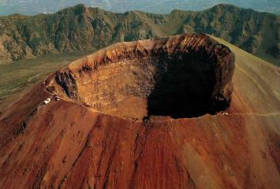
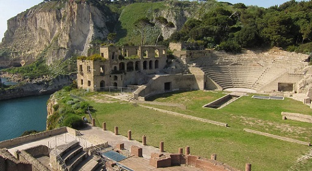

|
N Á P O L E S

La fundación del
primer asentamiento llego con la colonización griega, aproximadamente en
el 750 a.e.c. se establecen en Pithecusa, la actual isla de Ischia. Desde
aquí los colonos griegos se asentaron en la costa fundando hacia el 725
a.e.c Cuma. De Nápoles destaca sobre todo el Museo Archeologico Nazionale Piazza Museo Nazionale. Es posiblemente el Museo Arqueológico romano más importante del mundo.
La Nápoles
subterránea. Las primeras excavaciones se remontan a 5.000 años, casi al
final de la prehistoria. Hipogeos Via Cristallini Los hipogeos de Via dei Cristallini, son cuatro hipogeos independientes excavados en la toba. Cada una de ellas consta de dos cámaras superpuestas: el vestíbulo se utilizaba para realizar los ritos funerarios, desde el que se accedía a una escalera en la planta inferior, la tumba real destinada a albergar los cuerpos de los difuntos. Originalmente estaban ubicados en una calle noroeste fuera de las murallas de la ciudad de la antigua Neápolis y sirvieron como tumbas en época Griega y Romana. A las cámaras funerarias se puede acceder a ellas a través de una escalera ubicada dentro del Palazzo di Donato, en Vía dei Cristallini, de donde las tumbas toman su nombre. Un viaje en el tiempo de 2.300.- años. Hipogeo de los Cristallini de Nápoles (ipogeodeicristallini.org) Catacumba de San Gaudioso Catacumba de San Severo Catacumba de San Gennaro En Vía Capodimonte, excavadas en la colina de Capodimonte. Las catacumbas se extendieron desde una tumba romana de finales del siglo II, principios del III, cedida a la comunidad cristiana, ampliada hasta conseguir en el siglo IV la actual estructura con dos niveles de galerías sepulcrales. Tumbas de Virgilio y Leopardi La tumba de Virgilio es un monumento funerario romano de la edad Augusta. Se caracteriza por una base cúbica revestida por losas calcáreas, en las que se superpone un cuerpo cilíndrico; la estancia interior tiene bóveda de cañón y está dividida por diez nichos. Teatro El
teatro romano de Nápoles se halla bajo los edificios dell'Anticaglia, calle
curvilínea, y Via Pisanelli. Data de época de Augusto. Hay bajar 121
escalones que terminan en una gran galería a 40 metros de profundidad.
Se conserva un espacio de 150m pero con una altura de 12m. Se puede ver
lo que queda de la «suma cavea», el anillo superior de las gradas. Se
estima una capacidad de 5.000.- espectadores.
Excavaciones Arqueológicas de San Lorenzo Maggiore Las
excavaciones Arqueológicas de San Lorenzo Maggiore, se localizan en la
Piazza San Gaetano. El antiguo Foro de Neapolis. Fue construido a
finales del siglo I – principios del siglo II.
Termas romanas de Santa Clara En la Iglesia de Santa Chiara, encontramos el Área Arqueológica de Santa Chiara. El complejo termal de una villa romana. Se construyó durante el período de renovación urbana que siguió al terremoto del 62 y la erupción del Vesubio del 79. Estaba localizada a extramuros de la ciudad. En el nivel inferior se hallaba el hipogeo y el alcantarillado. En la planta superior con forma de L, estaban situadas las salas del complejo termal. Separado del resto del complejo, se encontraría la palestra. En el museo podemos ver los materiales hallados durante las excavaciones arqueológicas. Destaca la tubería de abastecimiento de plomo, que traería el agua a la villa y las termas, a través del Acueducto de Serino.
Muralla Griega La
Muralla Griega se localiza en la Piazza Bellini. Data del siglo IV a.e.c.,
los muros estaban compuestos por dos filas de grandes bloques cuadrados
de toba, unidos por refuerzos trasversales.
Excavaciones Arqueológicas del Duomo Se localiza en la Vía Duomo. En los espacios subterráneos de la Catedral se pueden ver estructuras griegas y romanas de los siglos IV a.e.c. al VI, con grandes fragmentos de mosaicos paleocristianos con motivos florales. La basílica fue fundada en torno al 324-325 por el emperador Constantino. Entre los vestigios de la Neapolis grecorromana se encuentran algunas de sus calles y restos de edificios de varios pisos, de época imperial. Parque arqueológico de Pausilypon Se halla a 16km del aeropuerto. Debe su nombre a Lucio Elio Sejano, prefecto de Tiberio. Constaba de teatro, Odeion y un ninfeo. Al complejo se accedía por la cueva de Sejano, un túnel artificial, a unos 770 metros de longitud, que conecta con Coroglio Gaiola pasando por el valle de la colina de Posillipo, hacia el mar. https://www.areamarinaprotettagaiola.it/pausilypon

|